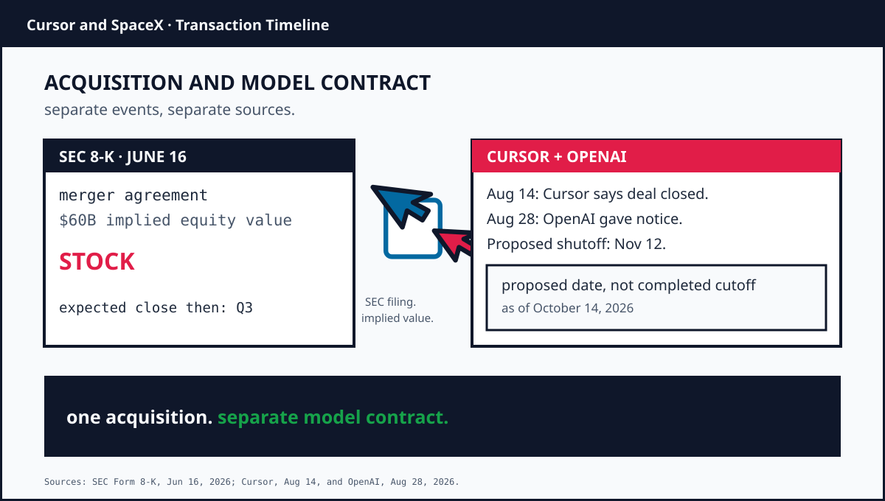
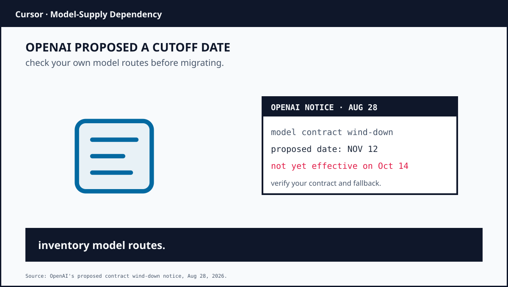

1. The Merger: A Disclosed Value, Then a Completed Deal
On June 16, Space Exploration Technologies Corp. filed an 8-K with the SEC describing a merger agreement with Anysphere, Inc., Cursor's parent. The filing says Cursor shares would be converted into SpaceX Class A stock based on an implied equity value of $60.0 billion. It also says the deal was subject to closing conditions, including regulatory approvals, and that SpaceX then expected it to close in the third quarter.
Cursor announced on August 14 that it had officially been acquired by SpaceX. Its announcement says the process began in April, when the companies announced a partnership to accelerate model training. Cursor's post confirms completion but does not state the final share calculation. The $60 billion figure in this article is the implied value in the June SEC filing, not a claim about cash paid or the final value of shares issued.

2. OpenAI Proposed a Separate Contract Wind-Down
On August 28, OpenAI said it had notified SpaceX that it intended to wind down its contract to provide models to Cursor, with a proposed shutoff date of November 12, 2026. OpenAI said the date gave the maximum notice allowed by its contract and that it would not provide future models to Cursor. As of October 14, that date was still in the future and the cutoff had not yet occurred.
OpenAI attributed the decision to a change-of-control clause with a limited cancellation window, concerns about compliance with its terms of service based on its experience with Musk-owned companies, and accountability for its upcoming Astra model. These are OpenAI's stated reasons. The announcement does not establish that Cursor had breached its agreement.
The acquisition and the model contract are separate events: Cursor says the merger closed in August; OpenAI's notice concerns its own model supply. Developers should check the actual contract notice, eligible models, and service behavior before treating the proposed date as a completed cutoff.
3. What the Public Sources Do and Do Not Establish
The SEC filing establishes the merger parties, the $60 billion implied equity value used to calculate stock consideration, and the expected third-quarter closing window as of June 16. Cursor's later announcement establishes that the acquisition process was complete by August 14. Cursor did not publish a final closing value in that post.
OpenAI's August 28 announcement establishes its intention to wind down its model contract and the proposed November 12 date. It does not report how much revenue the contract generated, how many Cursor requests used OpenAI models, or the financial impact on either company. This article does not infer those amounts from unverified traffic percentages or user anecdotes.
4. Treat Model Supply as a Dependency
The proposed November date creates a dependency-management task for teams whose workflows call OpenAI models through Cursor. The public notice does not say which specific projects or workflows are affected. Each team should inventory the models and API routes it uses, identify where vendor names are pinned in configuration, and test the replacement path before the proposed date.
Record model identity and provider in application logs, exercise fallback behavior under an explicit test, and set a policy for tasks that cannot be safely moved to another model. Do not assume that a model with a similar name or capability has the same prompt behavior, data terms, or API contract.

5. A Practical Migration Check
- Inventory actual requests. Record the provider, model identifier, API route, and task type used by each Cursor-based workflow.
- Find unattended paths. Search CI jobs, review bots, scripts, and internal tools for calls that depend on OpenAI models through Cursor.
- Test candidate replacements. Compare output quality, latency, tool use, and data handling on representative tasks; do not assume a similar model name means equivalent behavior.
- Document the cutoff condition. OpenAI's public date is a proposed contract shutoff. Confirm any later notice and the service behavior that applies to your account before scheduling a migration.
These are general dependency-management steps. The cited public sources do not provide a count of affected Cursor customers, workflows, or revenue.
6. What Remains Open
The June 16 SEC filing describes an implied equity value and a stock-consideration formula using SpaceX's seven-day volume-weighted average closing price before the merger closes. Cursor's August 14 announcement confirms completion but does not state the final share count. The filing's $60 billion valuation should not be restated as a final cash purchase price.
OpenAI described November 12 as its proposed model-contract shutoff date. As of October 14, the proposed date had not arrived. The cited sources do not describe which specific Cursor customer workflows will be affected or what replacement models, if any, those customers will choose.
7. The Verdict
The SEC filing establishes the merger's parties, stock consideration, and $60 billion implied equity value. Cursor's August 14 post confirms the acquisition closed. OpenAI's August 28 announcement establishes a separate plan to wind down its model contract, with a proposed November 12 date.
The public record supports a transaction timeline and a future provider-change notice. The official sources do not report model-picker behavior, customer usage percentages, contract revenue, or migration cost. Developers can prepare by inventorying their own dependencies and testing a migration against the terms and services they actually use.
Verify the transaction, the contract, and your own model routes separately.
Sources and Method
The $60 billion figure is the implied equity value in SpaceX's June 16 SEC filing, Item 1.01. Cursor's August 14 company post confirms the acquisition was completed but does not give a final share count. OpenAI's August 28 notice supplies the proposed November 12 contract wind-down date and its stated rationale. The sources do not quantify customer usage, revenue, or migration costs.
- Space Exploration Technologies Corp., Form 8-K, June 16, 2026, Item 1.01: Agreement and Plan of Merger; $60.0 billion implied equity value and stock consideration
- Cursor, August 14, 2026: Cursor is now a part of SpaceX
- OpenAI, August 28, 2026: Our decision on Cursor following its acquisition by SpaceX
- TechCrunch: SpaceX to Acquire Cursor for $60B in Stock
- TechCrunch, August 15, 2026: SpaceX officially closes its Cursor acquisition